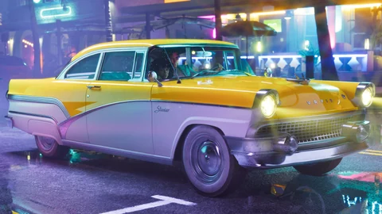
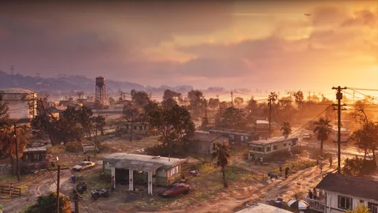

Encuentra las guaridas que aparecen en los medios, el escondite nombrado por Rockstar y los garajes descritos con sus bonificaciones de vehículo.
Las fichas distinguen lo que muestra la imagen de lo que confirma el texto oficial. Los garajes documentados aparecen más abajo con sus condiciones de acceso; no se da por hecha ninguna compra inmobiliaria aparte. Entender los estados.
Los garajes descritos con bonificaciones de vehículo se presentan aparte de los refugios que solo se han mostrado en los medios. El acceso depende del contenido anunciado. No se ha confirmado ninguna compra inmobiliaria aparte, ningún ingreso por alquiler ni ningún precio en el juego.
Edición Ultimate · Watson Bay
Garaje de Paradise
Asociado al Dominator Buggy: aparcamiento, taquilla de armas y depósito de objetos para un perista.
Obtención documentada · precio por separado desconocido
Nombre descriptivo basado en la presentación oficial.
Un escondite, un astillero, un motel: tres lugares mostrados y, después, textos de las ediciones que por fin describen el sistema.
Visto en un medio
Tráiler 1
Una habitación de motel, con la cortina corrida: Jason y Lucia en el Starlet Motel de Port Gellhorn (hacia el 1:12). El letrero, legible en las capturas de 2025, ha permitido situarlo en el mapa.
Imagen oficial de Rockstar Games
Visto en un medio
Tráiler 2 y capturas
El astillero de Brian, con el letrero Brian’s Boat Works & Marina legible de noche hacia el 1:25, y la pelea de Jason en el aparcamiento del Starlet hacia el 1:54. Una habitación del motel vuelve a aparecer hacia el 2:25.
Imagen oficial de Rockstar Games
Oficial
Ediciones
Rockstar llama “Jason’s Safehouse” a la casa de los Keys y describe dos garajes: Paradise en Watson Bay (edición Ultimate, con el Dominator Buggy ’67) y Shore Court “a dos pasos de Ocean Beach” (Pack Vintage Vice City, con el Stanier ’55). Cada uno tiene una taquilla de armas y un escondrijo para los objetos robados, que un perista local compra por debajo de su valor. Hay garajes personales “por todo Leonida”.

Imagen oficial de Rockstar Games
Visto en un medio
Extended Look y demostración
El Starlet Motel vuelve a aparecer hacia el 25:58. Al día siguiente, Rob Nelson (Rockstar North) explica a Famitsu que se cambia de escondite a lo largo de los capítulos, que se empieza con tres plazas de vehículo y que se compran garajes para tener más; las armas largas se guardan en una taquilla en Ammu-Nation.

Imagen oficial de Rockstar Games
Los dos garajes de las ediciones están documentados más arriba, debajo de las fichas, con su fuente y una casilla para marcar cuando los consigas.
02
Observaciones de los jugadores
Lo que ha identificado la comunidad
Lo que añaden los jugadores y lo que dejamos de lado.
El Starlet Motel→El antiguo Economy Inn de Lawtey (Florida), demolido en 2021; el letrero y los colores recuerdan al Dixie Motel de Hilliard. fuente
El astillero de Brian→El Marina Club de Blackwater Sound, en Key Largo. fuente
¿El Starlet, un escondite jugable?→GTABase lo incluye como escondite; la wiki recuerda que el motel se vio por primera vez en las filtraciones de 2022. No hay texto oficial. fuente
El número de escondites→Tres escondites y dos garajes según GTABase y la wiki, con nombres inventados por ellos, salvo tres. fuente
Watson Bay y Shore Court en el mapa→Sin ubicar: Rockstar da el barrio, no la dirección. No se usan los mapas procedentes de filtraciones. fuente
En esta página, un escondite “localizado” significa: visto en una imagen oficial y situado en el mapa a partir de esa imagen.
03
Preguntas abiertas
Lo que queda por confirmar
El sistema de escondites se ha descrito a trozos. Estos son los huecos.
?
¿Comprar un escondite?
No, según los avances de prensa de septiembre de 2026: se desbloquean con la historia. Solo se compran los garajes; ninguna página de Rockstar lo confirma.
?
El precio de un garaje
No se ha publicado ninguna cifra.
?
¿Paradise y Shore Court desde el principio?
Se desconoce. GTABase escribe “gratis, durante el juego” sin fuente.
?
Cuántas plazas tiene cada garaje
No se ha publicado. Solo se conoce el total inicial: tres vehículos.
?
El escondrijo y el perista
Descritos en los textos de las ediciones; no se indica cuánto se descuenta.
04
Herramientas del sitio
Lo que cambia para ti
Lo que puedes hacer ya con estas tres fichas y los dos garajes.
Las preguntas que se escriben en un buscador, con respuestas cortas y fechadas.
¿Cuántos escondites hay en GTA VI?
No se ha publicado ningún número. Solo una dirección lleva oficialmente el nombre de escondite, “Jason’s Safehouse”; Rob Nelson dijo a Famitsu que se cambia de escondite a lo largo de los capítulos. Las listas con tres escondites vienen de sitios de fans.
¿Se pueden comprar garajes?
Sí, según Rob Nelson (Famitsu, 28 de agosto de 2026): se empieza con tres plazas de vehículo y se compran garajes en el mapa para tener más. No se ha publicado ningún precio.
¿Qué hay en un garaje personal?
Según los textos de las ediciones (24 de junio de 2026): una taquilla de armas para preparar tu equipo y un escondrijo donde dejar los objetos robados, que después un perista local compra por debajo de su valor.
¿El Starlet Motel es un escondite?
Aparece en el Tráiler 1, el Tráiler 2 y el Extended Look, siempre con Jason y Lucia. Rockstar nunca lo ha llamado escondite: el sitio lo clasifica como “visto en un medio”, sin afirmar nada más.
¿Dónde están Watson Bay y Shore Court?
Watson Bay acoge el garaje Paradise de la edición Ultimate; Shore Court está “a dos pasos de Ocean Beach” según el texto del Pack Vintage. Rockstar no ha dado una dirección precisa, así que aún no están situados en el mapa.
06
17 fuentes consultadas
Fuentes y estados
Cada afirmación de esta página lleva un estado y viene de una página consultada en la fecha indicada. Las páginas de Rockstar se citan con la fecha de su última consulta directa; sus textos se volvieron a leer el 27 de septiembre de 2026 en las fuentes que los reproducen.
Oficial
Página o vídeo publicado por Rockstar (web de GTA VI, Newswire, tráileres, Extended Look), o declaraciones de un responsable de Rockstar recogidas por un medio identificado, con la fecha.
Visto en un medio
Lo que muestra una imagen o una secuencia oficial sin que Rockstar lo diga en un texto: un plano de tráiler, una captura, un momento del Extended Look, con el minuto exacto cuando se conoce.
Identificación de la comunidad
Relación establecida por jugadores, una wiki o un sitio de fans (lugar real, actor, condado). Se cita como tal, nunca se presenta como confirmada.
Por confirmar
Pregunta sin respuesta publicada: precio, compra, acceso, papel en la historia. La anotamos para no tener que adivinarla.
Seis regiones y ocho personajes presentados el 6 de mayo de 2025; textos de las ediciones del 24 de junio de 2026. Releído el 27/09/2026 en las páginas que lo citan (rockstargames.com no se podía abrir desde nuestro taller ese día).
Texto oficial de los comercios de la edición Ultimate: Rideout Customs, One-Eyed Willie’s en Lake Leonida, Stock 305 y Electric Fang en Stockyard, Sara’s Unisex Salon, PTT Youngin$ en Southside, Ammu-Nation.
Apariciones con minutaje; comparaciones con el Economy Inn de Lawtey, el Dixie Motel y un edificio de Miami; la lista de escondites de la wiki mezcla filtraciones, descartadas aquí.
Emisión del 27 de agosto de 2026 (Netflix y luego YouTube), 26 min 48 s, cuatro misiones: Venture Apartments, Effluvia, persecución con Raul, Megamundo.
Escondites que cambian con los capítulos, tres plazas de vehículo al principio, garajes para comprar, taquilla en Ammu-Nation, Pay ’n’ Spray y peristas, golpes, salones y tiendas, corte de pelo en casa.
Avances de prensa sin cita de Rockstar: escondites que no se compran, garajes que sí, casi todas las tiendas atracables, peristas especializados, abono al gimnasio.
Tres escondites y dos garajes en la lista; los nombres que no son Jason’s Safehouse, Paradise y Shore Court son los de esa web; sus afirmaciones sin fuente (desbloqueo gratis, ninguna compra) están por confirmar.
Vice City, única gran ciudad confirmada; contornos del Estado y frontera norte no mostrados; separa lo confirmado de las filtraciones (que no usamos).
Lo que no hacemos. Ningún dato sacado de las filtraciones de 2022 o de 2026, ningún precio inventado, ninguna comparación presentada como confirmada. Los estados se explican en el Tutorial.